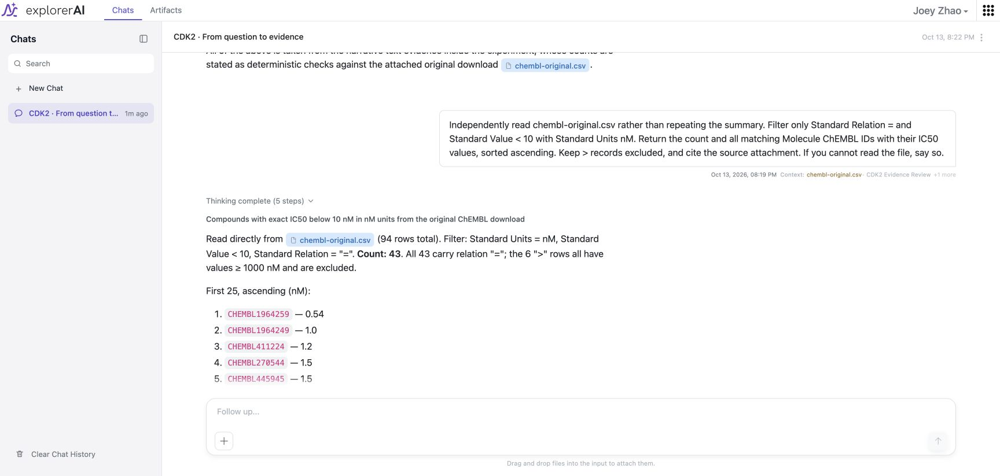
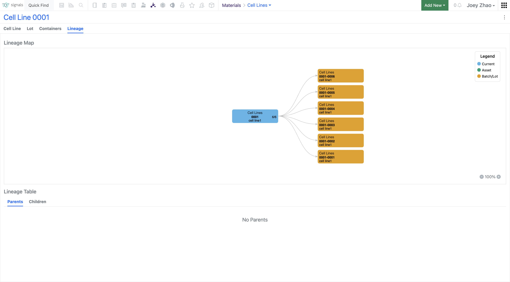

REVVITY SIGNALS / MAR 2021 – OCT 2026Revvity Signals / 2021 年 3 月—2026 年 10 月
Signals
Scientists only trust
what they can trace back.科学家只信
查得回去的结论。
Over five years at Revvity, I designed daily R&D software for pharma scientists moving between the wet bench and the screen. Misread one number or lose track of one batch on screen, and weeks of bench work start from the wrong place. Both projects here design the way back to raw evidence.在 Revvity 的五年多里，我为药企科学家设计每天打开的研发软件。他们整天在实验台与屏幕之间往返——屏幕上错信一个数、跟丢一批样本，实验台上白烧的就是几周排期与整轮试剂。这里的两个项目，都在用界面守住那条查回源头的路。
Explore the two projects查看两个项目 ↓TWO PROJECTS, ONE QUESTION两个项目，同一个追问
Where did this result
actually come from?眼前的结论，
怎么查回源头？
AI for Drug DiscoveryAI 科研制药
The AI got 43 molecules right—then miscounted by one.AI 筛对了 43 个分子，却在总结里数错一个。
In a real public-assay screening review, the chart was exact and all 43 hits checked out—yet one summary sentence miscounted by one. Harmless in casual chat; costly in drug discovery. See how I designed scientific AI as an inspectable workbench rather than blind chat: keeping questions beside the live experiment, exposing the exact filter rule, and wiring every claim back to its source record.在一次真实的公开药物筛选复核里，图表画对了，43 条候选也全对，偏偏文字总结少算了 1 个。在闲聊软件里这只是小瑕疵，在药物研发里却可能带偏下一轮实验。这个案例讲我如何把科研 AI 从“给答案的对话框”设计成“可验算的工作台”：提问留在实验旁、筛选口径摆在明面、每条结论都能一键点回原始记录。
Material Lineage Map材料谱系图
One material ID in hand. Where did it come from?手里只剩一个编号，怎么追回整条来路？
When an experiment behaves unexpectedly, a scientist often holds only one material ID: what was it derived from, which specific batch was used, and which assays touched it? Reconstructing that chain across scattered records used to take two hours. I connected materials, batches and experiments in an expandable lineage map paired with a synchronized verification table—cutting tracing tasks to 40 minutes.实验一旦出现异常，科学家手里往往只剩一个材料编号：它由什么衍生而来、用了哪一锅批次、进过哪次实验？过去在十几份记录间来回翻找要花两小时。我把材料、批次与实验串成可逐级展开的谱系图，并刻意保留了下方同步联动的核验表格——图看分支去向，表做逐行核对，将追溯耗时压到 40 分钟。

来自首席产品官
的一封嘉奖邮件A note of recognition
from the CPO
严肃研发软件很少收获掌声——顺手时像空气一样隐形，只有卡住实验时才会被人点名。2025 年 9 月，Revvity Signals 首席产品官 Josh Bond 发来邮件，确认产品管理团队授予我的季度表彰与奖金，点名肯定了我在 BioDesign、BioReg 与库存移动端上的设计工作。Enterprise lab software rarely gets applause—when it works, it disappears into the day’s research; people only notice when something breaks. In September 2025, Chief Product Officer Josh Bond wrote to confirm a quarterly recognition and reward from Product Management, specifically citing my work across BioDesign, BioReg and the Inventory Mobile app.
“谢谢你的创造力、
灵活应变和出色工作。”“Thank you, Joey, for your creativity,
flexibility, and outstanding work!”